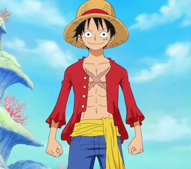

Monkey D. Luffy
Contact
Address: Grand Line
Phone: +123-456-7890
Email: strawhatpirate@gmail.com
Skills
- Physical Prowess: Exceptional strength, speed, agility, and durability
- Rubber Body: Immunity to electricity, ability to bounce and stretch
- Haki: Observation, Armament, and Conqueror's Haki
- Leadership: Inspiring and uniting diverse teams
- Problem-Solving: Creative and strategic thinking in challenging situations
- Navigation: Expert knowledge of the Grand Line and its dangers
Experience
- Led a crew of skilled pirates on countless adventures
- Defeated powerful enemies and liberated islands
- Achieved legendary status throughout the Grand Line
Pirate Apprentice
- Trained under the legendary pirate Gol D. Roger
- Learned the basics of sailing, swordsmanship, and leadership
Education
Self-Taught Pirate
- Gained extensive knowledge of the sea, history, and pirate culture through personal experience and observation
- Mastered various fighting styles and techniques
Additional Notes
Certifications
- Certified Gum-Gum Fruit User
- Certified Haki Master
Awards
- Most Wanted Pirate in the World (multiple times)
- Greatest Pirate of All Time (future)